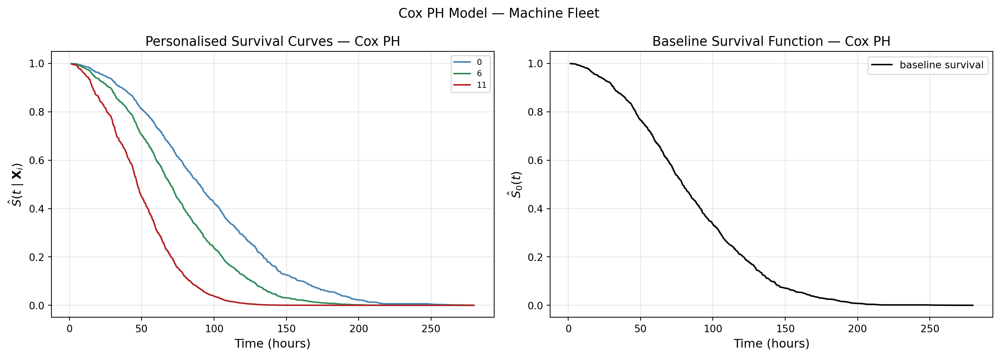

In Part 4, we derived the Kaplan-Meier estimator from scratch using conditional probability and a counting argument, proved Greenwood’s formula for its variance, and closed with the log-rank test for comparing survival curves across groups. We ended on a somewhat unsettling note — the log-rank test can tell us that manufacturer C machines fail faster than A and B, but it cannot say anything about the survival probability of this specific machine whose behaviour depends on age, load factor, vibration level, operating temperature, and a dozen other parameters.
Think about humans. Not all of us have the same survival curve. A person’s survival is a function of genetics, diet, sleep, exercise, and so on. The same logic applies to machines. This compels us to move from group-level survival curves to personalised survival curves — and the standard tool for this is the Cox Proportional Hazards model.
The Cox Proportional Hazards Model
Cox-PH models the hazard function of a unit given its covariates, rather than the survival curve directly. Recall from Part 1 that the hazard rate \(\lambda(t)\) is the instantaneous rate of failure at time \(t\), given survival up to \(t\).
For unit \(i\) with covariate vector \(\mathbf{X}_i = (X_{i1}, X_{i2}, \ldots, X_{ip})^T\), the Cox model specifies:
Formula first, explanation second — not our style. Let’s get to business.
The Two Components of Cox-PH
1. The Baseline Hazard \(\lambda_0(t)\)
\(\lambda_0(t)\) is the hazard function for a reference machine — one whose covariates are all zero. It captures how the baseline risk of failure evolves over time, irrespective of any machine-specific characteristics.
The beauty of Cox-PH is that you do not need to specify the form of \(\lambda_0(t)\) at all. No Weibull, no exponential, no distributional assumptions. It is estimated non-parametrically from the data — and we will see exactly how later.
2. The Risk Score \(\exp(\boldsymbol{\beta}^T \mathbf{X}_i)\)
The risk score is a multiplicative factor that scales the baseline hazard based on the individual unit’s covariates:
If \(\boldsymbol{\beta}^T \mathbf{X}_i > 0\), the risk score exceeds 1 — the machine’s hazard is higher than baseline.
If \(\boldsymbol{\beta}^T \mathbf{X}_i < 0\), the risk score is below 1 — the machine’s hazard is lower than baseline.
If \(\boldsymbol{\beta}^T \mathbf{X}_i = 0\), the machine is exactly at baseline.
Note that the risk score is always positive — \(\exp(\cdot)\) guarantees this — and it is time-independent. All the time dependence in the model lives in \(\lambda_0(t)\). The risk score simply shifts the hazard up or down by a fixed factor.
In one sentence: a machine operating under more stress than the reference has a higher hazard — more risk of failure at every point in time.
Why “Proportional Hazards”?
Consider any two machines \(i\) and \(j\). Their hazard ratio at time \(t\) is:
The hazard ratio is constant over time — it does not depend on \(t\). Machine \(i\)’s hazard is always a fixed scalar multiple of machine \(j\)’s hazard, regardless of when you look. This is the proportional hazards assumption: the two hazard functions are proportional to each other, with the ratio determined entirely by the difference in covariate values.
This is also the key assumption that can be violated — and Part 6 will show how to test it.
From Hazard to Survival: Personalised Survival Curves
The Cox model gives you the personalised hazard \(\lambda(t \mid \mathbf{X}_i)\). But what you usually want is the survival probability \(S(t \mid \mathbf{X}_i)\) — the probability that machine \(i\) survives past time \(t\). How do you get there?
where \(S_0(t) = \exp(-\Lambda_0(t))\) is the baseline survival function — the survival curve of the reference machine with all covariates equal to zero.
This is a beautiful result. The personalised survival curve for machine \(i\) is just the baseline survival curve raised to a power — and that power is the machine’s risk score. A high-risk machine pushes the curve down faster. A low-risk machine keeps it high. Same shape, different speed.
Estimating the Parameters: Attempt 1 — Maximum Likelihood
The model is specified. Now the real question: how do we estimate \(\boldsymbol{\beta}\)?
The natural first instinct is maximum likelihood — it worked beautifully in Part 3 for parametric models. Let’s try it here.
For an observed pair \((Y_i, \delta_i)\) with covariates \(\mathbf{X}_i\), the contribution to the likelihood is (note: this is not a conditional PDF in the strict sense — it is the standard censored likelihood contribution from Part 3, extended to covariates):
\(\lambda_0(t)\) appears in two places — directly as \(\lambda_0(Y_i)\) in the failure term, and inside the integral in the survival function. The joint likelihood for all \(n\) units is:
To maximise this, we would need to estimate both \(\boldsymbol{\beta}\) and the entire function \(\lambda_0(t)\) simultaneously. And here is the problem: \(\lambda_0(t)\) is a function — infinite-dimensional — not a finite set of numbers. Standard MLE optimises over a finite parameter space. It has no machinery for this.
Maximum likelihood, as we know it, does not work here.
But Cox had a trick.
Estimating the Parameters: The Cox Way
Suppose out of \(n\) machines, \(K\) fail. Order the failure times:
\[T_{(1)} < T_{(2)} < \cdots < T_{(K)}\]
where \(T_{(k)}\) is the \(k\)-th smallest failure time. We assume no ties — exactly one machine fails at each \(T_{(k)}\). Not a realistic assumption, but we made the same one when deriving the KM estimator and it served us well.
At each failure time \(T_{(k)}\), the risk set is:
\[\mathcal{R}_k = \{j : Y_j \geq T_{(k)}\}\]
— the set of machines still under observation just before \(T_{(k)}\), with \(n_k = |\mathcal{R}_k|\) denoting its size.
Let \(i_k\) denote the index of the machine that fails at \(T_{(k)}\). At each failure time, we ask:
\[P(\text{machine } i_k \text{ fails} \mid \text{exactly one failure from } \mathcal{R}_k \text{ at time } T_{(k)})\]
How do we compute this conditional probability? By definition:
\[P(\text{machine } i_k \text{ fails} \mid \text{one failure from } \mathcal{R}_k) =
\frac{P(\text{machine } i_k \text{ fails} \cap \text{ one failure from } \mathcal{R}_k)}
{P(\text{exactly one failure from } \mathcal{R}_k)}\]
Numerator: Machine \(i_k\) is already in the risk set \(\mathcal{R}_k\) — meaning it has survived up to \(T_{(k)}\) by definition. So the event “machine \(i_k\) fails and there is one failure from \(\mathcal{R}_k\)” reduces to just “machine \(i_k\) fails at \(T_{(k)}\)”:
\[P(\text{machine } i_k \text{ fails} \cap \text{ one failure from } \mathcal{R}_k)
= P(\text{machine } i_k \text{ fails at } T_{(k)})\]
This is a conditional failure probability — conditional on survival up to \(T_{(k)}\), which is exactly what the hazard captures:
Denominator: Exactly one machine fails from \(\mathcal{R}_k\) at \(T_{(k)}\). Since failures are independent, this is the sum of individual failure probabilities over all machines in the risk set:
\[P(\text{exactly one failure from } \mathcal{R}_k) \approx
\sum_{j \in \mathcal{R}_k} \lambda_0(t_{(k)}) \cdot
\exp(\boldsymbol{\beta}^T \mathbf{X}_j)\, dt\]
The baseline hazard vanishes entirely. This is Cox’s trick — by conditioning on the fact that exactly one failure occurs at \(T_{(k)}\), the baseline hazard function \(\lambda_0(t)\) cancels and we are left with an expression that depends only on \(\boldsymbol{\beta}\).
For those familiar with machine learning: yes, this is the softmax function. The probability that machine \(i_k\) is the one that fails is its exponentiated risk score divided by the sum of exponentiated risk scores over all machines at risk. The Cox partial likelihood is, at its core, a repeated softmax over shrinking risk sets.
Partial Likelihood
The regular likelihood — as we saw in Attempt 1 — requires estimating \(\lambda_0(t)\) alongside \(\boldsymbol{\beta}\). The partial likelihood sidesteps this entirely. Instead of writing down the probability of the full data, we write down only the probability of the ordering of failures — which machine failed first, which failed second, and so on — conditional on the failure times themselves. The baseline hazard cancels at every step, and what remains depends only on \(\boldsymbol{\beta}\).
Formally, suppose the ordered failure times are \(t_{(1)} < t_{(2)} < \cdots < t_{(K)}\). Each failure contributes one factor to the partial likelihood:
With each failure, the risk set \(\mathcal{R}_k\) shrinks — the machine that just failed leaves, and so do any units censored between \(t_{(k-1)}\) and \(t_{(k)}\). The full partial likelihood is the product over all \(K\) failure times:
This is as far as the algebra takes us. No closed-form solution exists — you cannot set the derivative to zero and solve for \(\hat{\boldsymbol{\beta}}\) analytically. Instead, \(\hat{\boldsymbol{\beta}}\) is obtained via numerical optimization — gradient ascent or Newton-Raphson — applied to \(\ell(\boldsymbol{\beta})\).
Notice what is absent from the partial likelihood: \(\lambda_0(t)\). The censored observations also do not appear directly — they contribute only through the risk sets \(\mathcal{R}_k\), shrinking them as units drop out. Cox’s insight was that this partial likelihood contains enough information to estimate \(\boldsymbol{\beta}\) consistently
Interpreting \(\hat{\boldsymbol{\beta}}\)
Suppose \(\hat{\boldsymbol{\beta}} = (\hat{\beta}_1, \hat{\beta}_2, \ldots, \hat{\beta}_p)^T\). Consider two machines A and B that are identical in every covariate except \(X_j\), where B has one unit more than A:
\(\lambda_0(t)\) cancels again. A one-unit increase in \(X_j\) multiplies the hazard by \(\exp(\beta_j)\), regardless of the values of all other covariates and regardless of time.
More generally, if \(X_j\) increases by \(\alpha\) units:
Example. Suppose \(X_j\) = daily usage hours and \(\hat{\beta}_j = 0.15\). Then \(\exp(0.15) = 1.162\) — each additional hour of daily usage increases the hazard by 16.2%. This holds whether the comparison is 5 vs 6 hours or 100 vs 101 hours.
Categorical covariates. For a covariate with \(c\) categories (say, manufacturer A, B, C), you create \(c - 1\) dummy variables — one category becomes the reference. Each dummy’s \(\hat{\beta}\) gives the log hazard ratio relative to the reference category. For example, if manufacturer A is the reference and \(\hat{\beta}_C = 0.8\), then manufacturer C machines have \(\exp(0.8) = 2.23\) times the hazard of manufacturer A machines.
Confidence Intervals for \(\hat{\beta}_j\)
The standard 95% confidence interval for \(\hat{\beta}_j\) is:
The standard error comes from the observed Fisher information matrix\(\mathcal{I}(\hat{\boldsymbol{\beta}})\) — the negative Hessian of the log partial likelihood evaluated at \(\hat{\boldsymbol{\beta}}\):
The full derivation of the Fisher information matrix is a topic for another day. What matters here is the asymptotic result: \(\hat{\beta}_j\) is approximately normally distributed with mean \(\beta_j\) (unbiased) and variance \([\mathcal{I}(\hat{\boldsymbol{\beta}})^{-1}]_{jj}\).
Example. Suppose \(\hat{\beta}_j = 0.15\) and \(\text{SE}(\hat{\beta}_j) = 0.05\). The 95% CI for \(\beta_j\) is:
We are 95% confident that each additional hour of daily usage increases the hazard by somewhere between 5.3% and 28.2% — and this holds whether the comparison is 5 vs 6 hours or 100 vs 101 hours.
Personalised Survival Curves and the Baseline Hazard
We have everything we need — except one thing. Recall the personalised survival curve:
Once we have \(\hat{\boldsymbol{\beta}}\) from the partial likelihood, the only missing piece is \(\hat{S}_0(t)\) — the baseline survival function. And \(\hat{S}_0(t)\) depends on the baseline cumulative hazard:
which in turn depends on \(\lambda_0(t)\) — the very function Cox-PH deliberately left unspecified.
If the business question is purely about ranking machines by risk — which ones are most likely to fail next — then \(\hat{\boldsymbol{\beta}}\) alone is enough. The risk score \(\exp(\hat{\boldsymbol{\beta}}^T \mathbf{X}_i)\) gives you a relative ordering without ever touching \(\lambda_0(t)\).
But if you want an actual survival probability — “what is the chance that this machine, 8 years old, running at high load, operating at 110°C with a vibration level of 6.2, survives past 150 hours?” — you need both \(\hat{\boldsymbol{\beta}}\)and\(\hat{S}_0(t)\). This is exactly the personalised question we set out to answer at the beginning of Part 5. We are not done yet. This is where Breslow’s estimator comes in.
Breslow’s Estimator
Partition the time axis into subintervals defined by the ordered failure times:
For any time \(t\), the baseline cumulative hazard is:
\[\Lambda_0(t) = \int_0^t \lambda_0(u)\, du\]
If \(k\) is the largest index such that \(t_{(k)} \leq t\), we can split this integral across the subintervals:
\[\Lambda_0(t) = \int_0^{t_{(1)}} \lambda_0(u)\, du +
\int_{t_{(1)}}^{t_{(2)}} \lambda_0(u)\, du + \cdots +
\int_{t_{(k)}}^{t} \lambda_0(u)\, du\]
This is the standard Riemann integral setup — we are integrating \(\lambda_0\) over a partition of \([0, t]\). On each subinterval \([t_{(k)}, t_{(k+1)})\), we approximate the integral by choosing a tag \(u_k^*\):
\[\int_{t_{(k)}}^{t_{(k+1)}} \lambda_0(u)\, du \approx
\lambda_0(u_k^*) \cdot (t_{(k+1)} - t_{(k)})\]
Here is where Breslow’s key assumption enters.
\[\boxed{\text{Between consecutive failure times, the baseline hazard is zero.}
\text{ All the mass of } \lambda_0 \text{ is concentrated at the failure times.}}\]
Why is this reasonable? The data only speaks at failure times \(t_{(1)}, t_{(2)}, \ldots, t_{(K)}\). Between failures, we observe nothing — no machine fails, no information arrives. We have no basis for estimating what \(\lambda_0\) does between failure times. Breslow’s assumption is the most conservative stance: if the data is silent, so is the hazard.
Under this assumption, the integral over each subinterval collapses to a point mass at \(t_{(k)}\):
\[\int_{t_{(k)}}^{t_{(k+1)}} \lambda_0(u)\, du = \alpha_k\]
where \(\alpha_k \geq 0\) is the jump in \(\Lambda_0\) at time \(t_{(k)}\) — the amount of cumulative hazard accumulated at that failure time. The baseline cumulative hazard becomes a step function:
Since we have information only at the actual failure times, we write \(\Lambda(t_{(k)}^- \mid \mathbf{X}_j) = \Lambda(t_{(k-1)} \mid \mathbf{X}_j)\) — the cumulative hazard just before \(t_{(k)}\) equals its value at the previous failure time.
\(\alpha_k\) controls how likely each machine in \(\mathcal{R}_k\) is to fail at \(t_{(k)}\). A larger \(\alpha_k\) means a bigger drop in each machine’s survival curve, which means more expected failures. So the strategy is:
Write down \(p_j\) — probability that machine \(j\) fails at \(t_{(k)}\) — as a function of \(\alpha_k\)
Sum over \(\mathcal{R}_k\) to get \(\mathbb{E}[D_k]\) as a function of \(\alpha_k\)
Method of moments: set observed = expected, solve for \(\alpha_k\)
Step 1: \(p_j\) — Probability of Machine \(j\) Failing at \(t_{(k)}\)
Machine \(j\) is in \(\mathcal{R}_k\) — alive just before \(t_{(k)}\), i.e. \(T_j \geq t_{(k)}^-\). \(p_j\) is a discrete failure probability — conditioned on survival up to \(t_{(k)}\):
\[p_j = P(T_j = t_{(k)} \mid \mathbf{X}_j)\]
Expressing in terms of the survival function. Breaking down the event \(\{T_j \geq t_{(k)}\}\):
Remember: \(\Lambda_0(t)\) is a step function — it jumps at \(t_{(k)}\). So \(\Lambda_0(t_{(k)}^-) = \Lambda_0(t_{(k-1)})\) before the jump, and \(\Lambda_0(t_{(k)}) = \Lambda_0(t_{(k-1)}) + \alpha_k\) at and after the jump. Now:
Method of moments is one of the oldest estimation strategies in statistics. The idea is simple: find the parameter value that makes the theoretical moment (here, the expected number of failures) equal to the observed moment (the actual number of failures). No likelihood, no distribution — just equate and solve.
Breslow’s estimator for the jump at \(t_{(k)}\). Under the no-ties assumption, \(d_k = 1\) always. The denominator is the total risk score in the pool at \(t_{(k)}\).
That machine — 8 years old, running at high load, operating at 110°C with a vibration level of 6.2 — now has a survival curve. This is what we came for.
Enough theory. Let’s fit the Cox model to our machine fleet and see what the data says.
import pandas as pdimport numpy as npimport matplotlib.pyplot as pltfrom lifelines import CoxPHFitterdf = pd.read_csv('../../data/machine_fleet.csv')# Drop non-numeric columns and one-hot encode categoricalsdf_model = pd.get_dummies( df.drop(columns=['machine_id']), columns=['environment', 'manufacturer'], drop_first=True)# Fit Cox PH modelcph = CoxPHFitter()cph.fit(df_model, duration_col='observed_time', event_col='event_observed')cph.print_summary()# Personalised survival curves + baselineplt.close('all')# Get integer indices of first outdoor machine per manufactureroutdoor_idx = (df[df['environment'] =='outdoor'] .groupby('manufacturer') .apply(lambda x: x.index[0], include_groups=False) .values)machines = df_model.loc[outdoor_idx]fig, axes = plt.subplots(1, 2, figsize=(14, 5))# Left — personalised curvesax = axes[0]colors = ['steelblue', 'seagreen', 'firebrick']for i, (idx, row) inenumerate(machines.iterrows()): mfr = df.loc[idx, 'manufacturer'] machine_id = df.loc[idx, 'machine_id'] cph.predict_survival_function(row.to_frame().T).plot( ax=ax, label=f"Machine {machine_id} | Mfr {mfr} "f"(age={df.loc[idx, 'machine_age']:.1f}, "f"load={df.loc[idx, 'load_factor']:.2f})", color=colors[i] )ax.set_xlabel('Time (hours)', fontsize=12)ax.set_ylabel(r'$\hat{S}(t \mid \mathbf{X}_i)$', fontsize=12)ax.set_title('Personalised Survival Curves — Cox PH', fontsize=13)ax.legend(fontsize=8)ax.grid(True, alpha=0.3)# Right — baseline survivalax = axes[1]cph.baseline_survival_.plot(ax=ax, color='black', linewidth=1.5)ax.set_xlabel('Time (hours)', fontsize=12)ax.set_ylabel(r'$\hat{S}_0(t)$', fontsize=12)ax.set_title('Baseline Survival Function — Cox PH', fontsize=13)ax.grid(True, alpha=0.3)plt.suptitle('Cox PH Model — Machine Fleet', fontsize=13)plt.tight_layout()plt.show()plt.close('all')
model
lifelines.CoxPHFitter
duration col
'observed_time'
event col
'event_observed'
baseline estimation
breslow
number of observations
1000
number of events observed
886
partial log-likelihood
-5177.04
time fit was run
2026-07-07 03:10:36 UTC
coef
exp(coef)
se(coef)
coef lower 95%
coef upper 95%
exp(coef) lower 95%
exp(coef) upper 95%
cmp to
z
p
-log2(p)
machine_age
0.02
1.02
0.01
0.01
0.04
1.01
1.04
0.00
3.04
<0.005
8.73
usage_intensity
0.17
1.18
0.08
0.02
0.32
1.02
1.38
0.00
2.16
0.03
5.00
operating_temp
0.00
1.00
0.00
-0.00
0.01
1.00
1.01
0.00
0.93
0.35
1.50
load_factor
0.30
1.34
0.17
-0.04
0.64
0.96
1.89
0.00
1.70
0.09
3.49
rpm
0.00
1.00
0.00
-0.00
0.00
1.00
1.00
0.00
0.78
0.43
1.20
vibration_level
0.03
1.04
0.01
0.01
0.06
1.01
1.06
0.00
2.82
<0.005
7.69
oil_quality
0.25
1.28
0.12
0.02
0.48
1.02
1.62
0.00
2.10
0.04
4.82
maintenance_count
-0.03
0.97
0.01
-0.04
-0.02
0.96
0.98
0.00
-4.64
<0.005
18.10
environment_indoor
-0.78
0.46
0.10
-0.97
-0.59
0.38
0.55
0.00
-8.11
<0.005
50.76
environment_outdoor
-0.41
0.66
0.09
-0.59
-0.22
0.55
0.80
0.00
-4.31
<0.005
15.92
manufacturer_B
0.15
1.16
0.08
-0.00
0.30
1.00
1.35
0.00
1.92
0.06
4.17
manufacturer_C
0.74
2.09
0.09
0.56
0.92
1.74
2.50
0.00
7.96
<0.005
49.03
Concordance
0.63
Partial AIC
10378.08
log-likelihood ratio test
164.64 on 12 df
-log2(p) of ll-ratio test
93.77

The model summary and the survival curves tell a clear story.
Manufacturer. Manufacturer C has \(\hat{\beta} = 0.74\), \(\exp(\hat{\beta}) = 2.09\). Controlling for everything else — age, load, temperature, vibration — manufacturer C machines have roughly twice the hazard of manufacturer A at every point in time. Not surprising given what the log-rank test already told us in Part 4. Manufacturer B is not significantly different from A (\(p = 0.06\)).
Environment. The biggest effect in the model. Indoor machines have \(\hat{\beta} = -0.78\), \(\exp(-0.78) = 0.46\) — less than half the hazard of machines in harsh conditions. Outdoor machines are in between (\(\exp(-0.41) = 0.66\)). Where you put the machine matters more than almost anything else.
Maintenance count.\(\hat{\beta} = -0.03\) — each additional maintenance visit slightly reduces hazard. Small effect, right direction.
RPM. Not significant (\(p = 0.43\)). Once you control for load factor and vibration level, RPM adds nothing. Classic collinearity — RPM is probably correlated with load factor and the model attributes the effect there.
The three survival curves show exactly this. Same environment (outdoor), different manufacturers. Machine from manufacturer C (red) drops fastest. Manufacturer A (blue) survives longest. The gap is not noise — it is \(\exp(0.74) = 2.09\) baked in.
The baseline survival (right panel) is the survival curve for a reference machine — all continuous covariates at zero, manufacturer A, harsh environment. Drops to 50% around 80 hours. Every other machine’s curve is this baseline raised to the power of its risk score. Same shape, different speed.
The Concordance Index
You may have noticed a line at the bottom of the Cox PH summary:
Concordance = 0.63. What is this?
The concordance index (C-index) is the standard metric for evaluating the discriminative ability of a survival model. In plain English: given two randomly chosen machines, how often does the model correctly identify which one fails first?
Formally, consider any two machines \(i\) and \(j\) where \(i\) fails before \(j\) — and \(j\)’s failure is actually observed, not censored (otherwise the comparison is unfair). The model assigns a risk score \(\exp(\hat{\boldsymbol{\beta}}^T \mathbf{X}_i)\) to each machine. A concordant pair is one where the machine that fails first also has the higher risk score — the model got the ordering right. A discordant pair is one where it got it wrong.
\(C = 1.0\) — perfect ranking. Every pair ordered correctly.
\(C < 0.5\) — worse than random. Systematically wrong.
Our model has \(C = 0.63\). Not great, not terrible. It correctly ranks 63% of all comparable pairs — there is real signal, but the model is clearly missing something. That something is what Parts 6 onwards are about.
One important distinction: the C-index measures ranking ability, not calibration. A model can rank machines correctly but still output survival probabilities that are way off. Both matter. The C-index only tells you half the story.
Note
A note on calibration. The C-index tells you whether the model ranks machines correctly — but not whether the predicted survival probabilities are trustworthy in absolute terms. A model might correctly identify that machine A is riskier than machine B, but predict \(\hat{S}(100 \mid \mathbf{X}_A) = 0.4\) when the true value is 0.2.
In binary classification, Platt scaling and isotonic regression fix this. For survival models it is harder — the output is a function \(\hat{S}(t \mid \mathbf{X}_i)\), not a scalar, and censoring means you don’t always observe the true outcome. Extensions exist: you can apply isotonic regression at a fixed time horizon \(t^*\) using IPCW (inverse probability of censoring weighting) to handle censored observations, or use D-calibration — a survival-specific test that checks whether predicted survival probabilities are uniformly distributed under the true distribution. Calibration in survival analysis is an active research area and a topic for a future part.
Conclusion
Part 5 is done.
We started with a question: what is the survival probability for this machine, given its age, load, temperature, and vibration level? The log-rank test from Part 4 couldn’t answer it. Cox PH can.
Two components. Time lives in \(\lambda_0(t)\). The machine lives in \(\exp(\boldsymbol{\beta}^T \mathbf{X}_i)\). They never mix.
Estimating \(\boldsymbol{\beta}\) without knowing \(\lambda_0(t)\) — that’s the partial likelihood. Cox’s trick. At each failure time, condition on the fact that exactly one machine failed and ask which one. Softmax over the risk set. Multiply across all failure times. Optimise. \(\lambda_0(t)\) never appears.
Then Breslow gives you \(\lambda_0(t)\) back — method of moments, set observed failures equal to expected, solve for the jump size \(\alpha_k\) at each failure time. Stack the jumps, exponentiate, and you have \(\hat{S}_0(t)\). And then:
That’s the answer. That machine — 8 years old, high load, 110°C, vibration 6.2 — now has a survival curve.
On our fleet: manufacturer C has twice the hazard of A. Harsh environments more than double the hazard compared to indoor. Maintenance helps. RPM doesn’t — collinearity with load factor. C-index of 0.63 — real signal, room to improve.
Parts 1 through 5 cover what I’d call the core of classical survival analysis. But the story doesn’t end there.
What’s next? The Cox model as derived breaks down when two machines fail at exactly the same time. Part 6 fixes that — Breslow, Efron, and the exact partial likelihood for tied failure times. Part 7 handles time-varying covariates — what happens when \(\mathbf{X}_i\) becomes \(\mathbf{X}_i(t)\) and the covariate vector itself evolves as the machine ages. Part 8 is diagnostics — how do you know if the proportional hazards assumption actually holds?